The frame every page sits in: navigation, drawer, header and the global sheets. 11 in use. Rendered from Storybook on the app background (#f4f4f4). Generated by tools/build-canvases.js; do not edit by hand.
MarkdownEditor doesn't participate in v-model for a nested prop cleanly (it emits 'input'), so we write the new description onto localMilestoneData explicitly. The deep watcher then propagates it to the parent container via update:milestoneData.
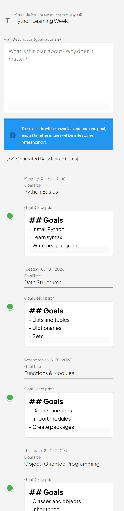
Week Plan
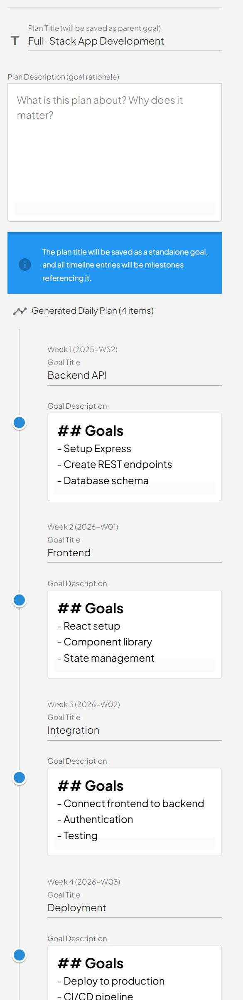
Month Plan
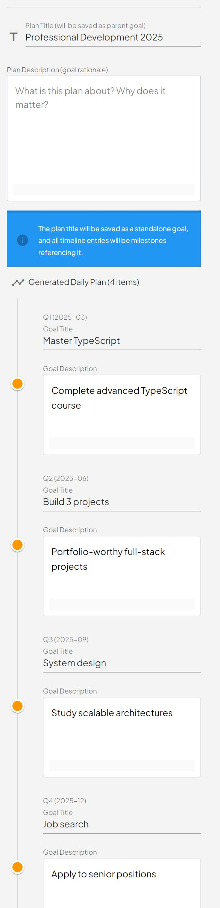
Year Plan
O03
AiSearchModal
packages/ui/organisms/AiSearchModal
AI Search Modal - Intelligent Task/Goal Creation MILESTONE PERIOD FETCHING LOGIC: ================================= When the modal switches from Task mode to Goal mode (auto or manual), or when the period changes to week/month/year, it automatically fetches goals from the PARENT period to populate milestone selection options. Period Hierarchy (uses stepupMilestonePeriodDate): - day → fetches WEEK goals (Friday of …
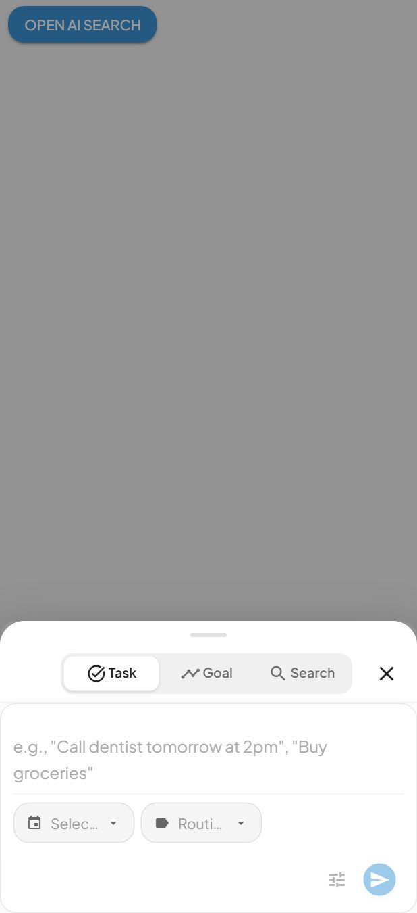
Task ModeGoals Mode
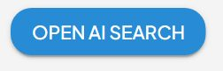
Closed
O04
AiTaskCreationForm
packages/ui/organisms/AiTaskCreationForm
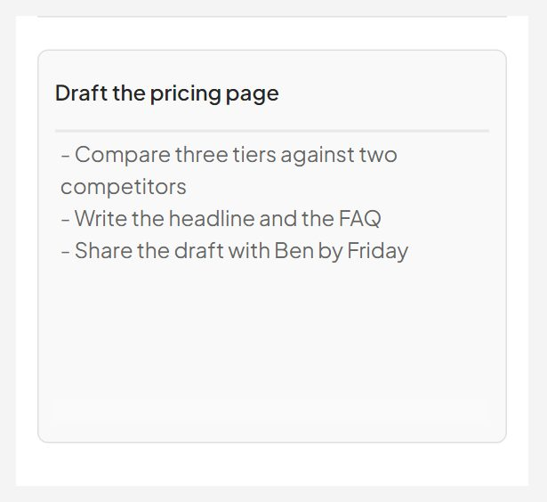
Default
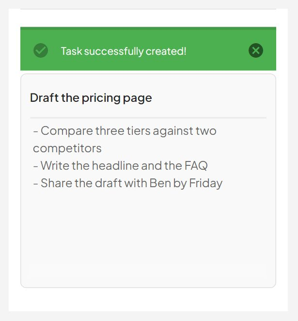
Created
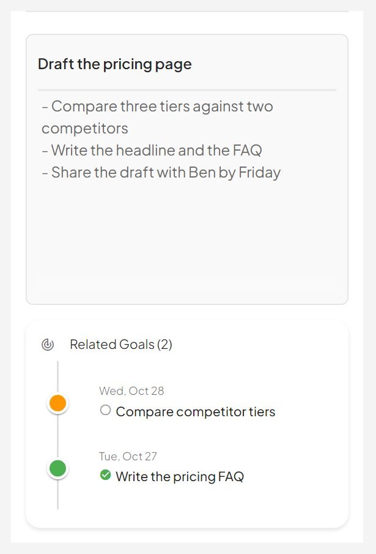
With Goal Timeline
O05
AppShell
packages/ui/organisms/AppShell
The one app chassis every redesigned screen renders inside.
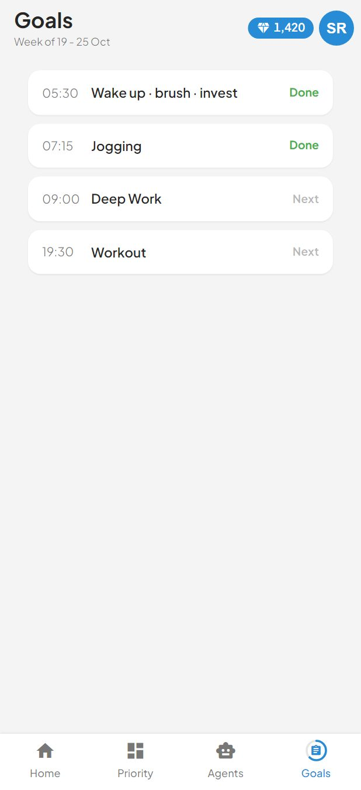
Phone
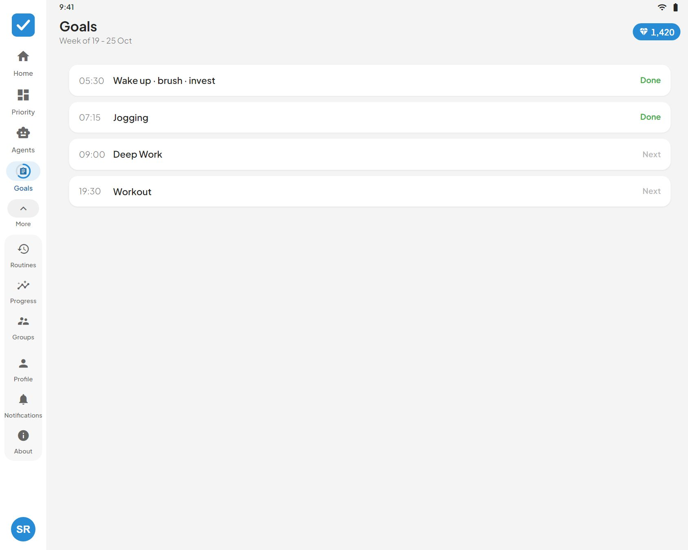
Tablet
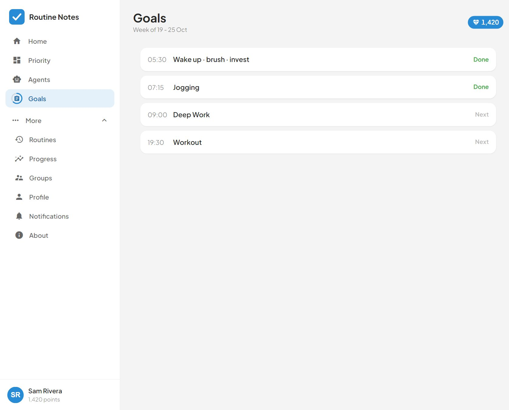
Desktop
O06
GoalCreation
packages/ui/organisms/GoalCreation
Push the item to the next day. `updateGoalItem` already relocates the subdocument between date documents and stamps originalDate / rescheduled (server resolvers/goal.js moveGoalItem), so a defer is just a save with tomorrow's date — no second code path to keep in step.
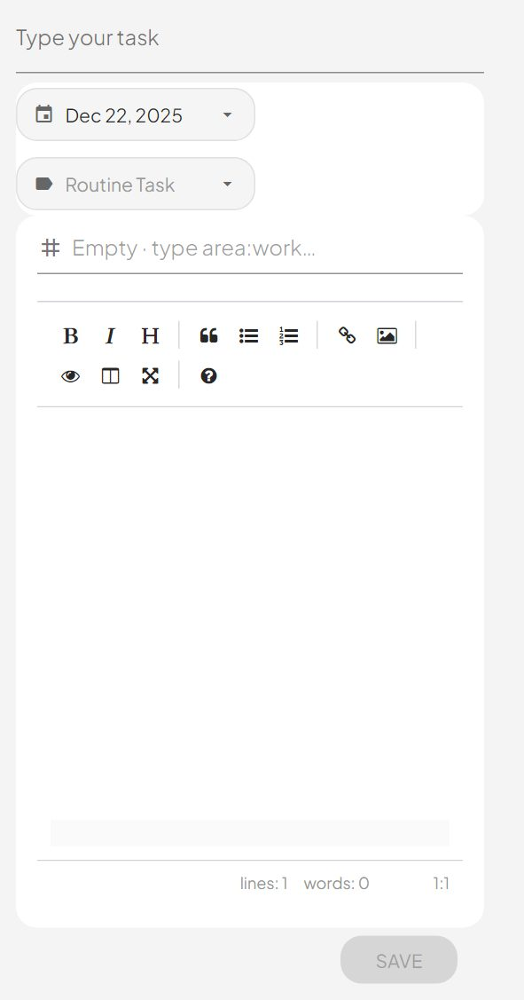
New Day Goal
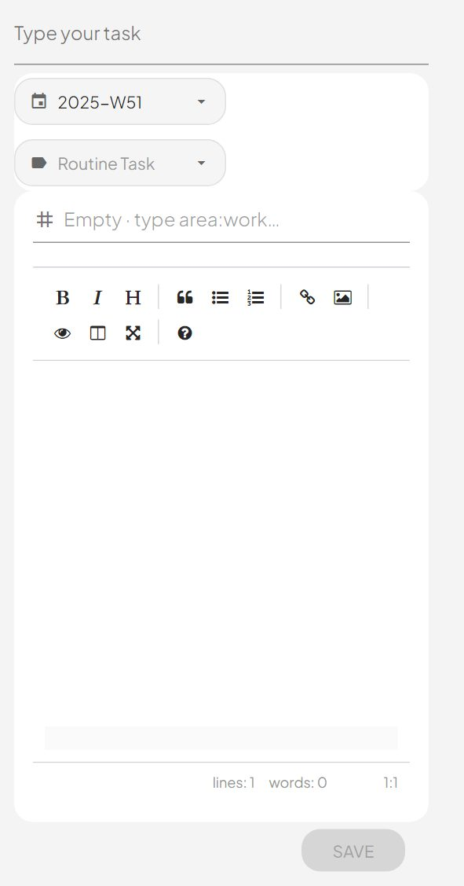
New Week Goal
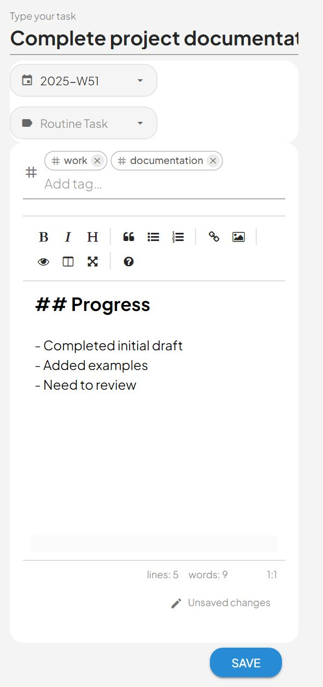
Editing Goal With Tags
O07
GoalDeleteSheet
packages/ui/organisms/GoalDeleteSheet
Deleting a goal item, confirmed in a chassis sheet.
With MilestonesMany Milestones TruncatedNothing Depends On It
O08
GoalItemSheet
packages/ui/organisms/GoalItemSheet
The goal-item page — `sheetGoal` in `packages/design/Routine Notes Final.dc.html`.
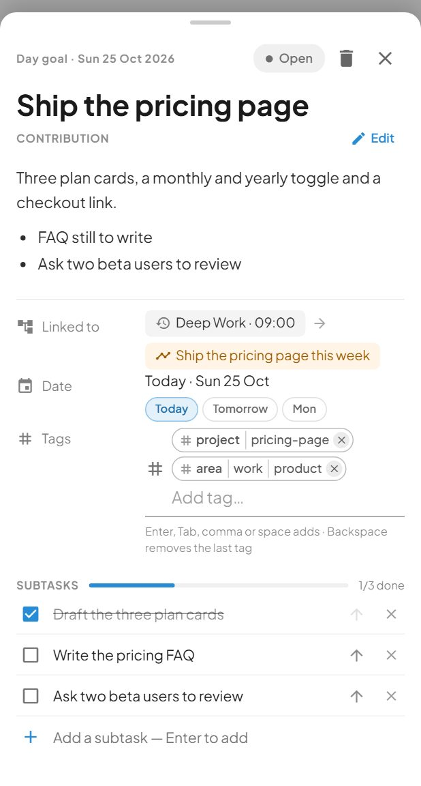
Edit Open Goal
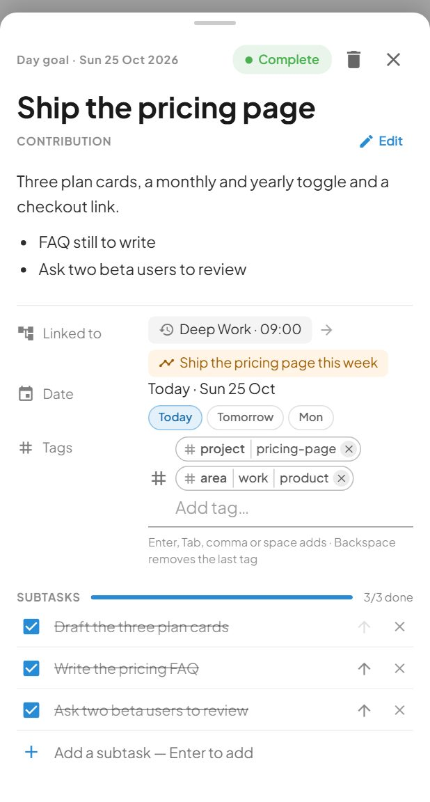
Edit Completed
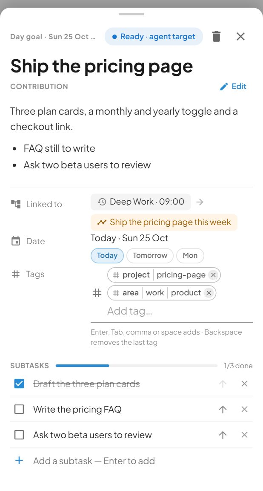
Edit Agent Target
O09
GoalTaskToolbar
packages/ui/organisms/GoalTaskToolbar
Whether to render child selectors in mobile sub-drawer mode
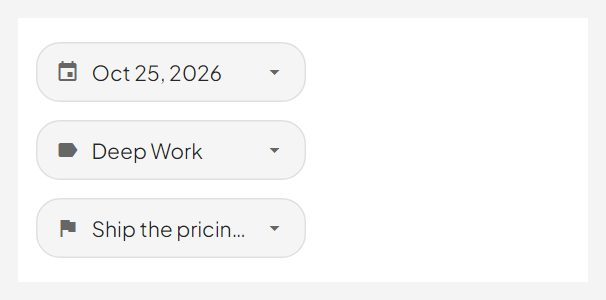
Day Goal With Milestone Parent
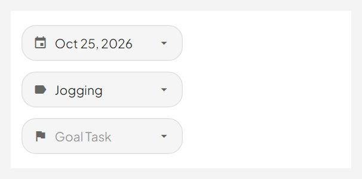
Routine Chosen No Parent Yet
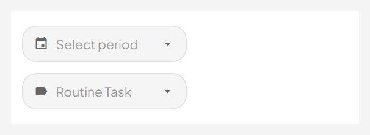
Nothing Picked Yet
O10
PendingList
packages/ui/organisms/PendingList
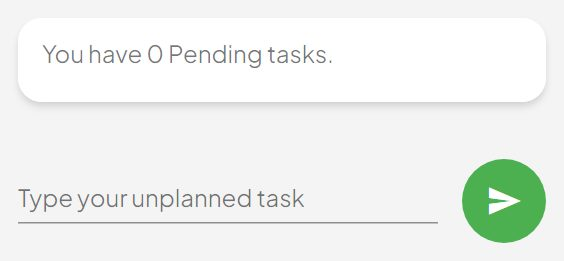
Default
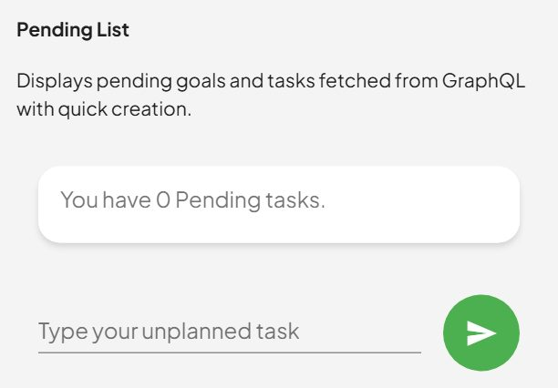
With Description
O11
UserDrawer
packages/ui/organisms/UserDrawer
The left drawer the avatar opens. D/K/G moved here out of the home screen (design handoff § User drawer) so the home screen can be only the focused routine.